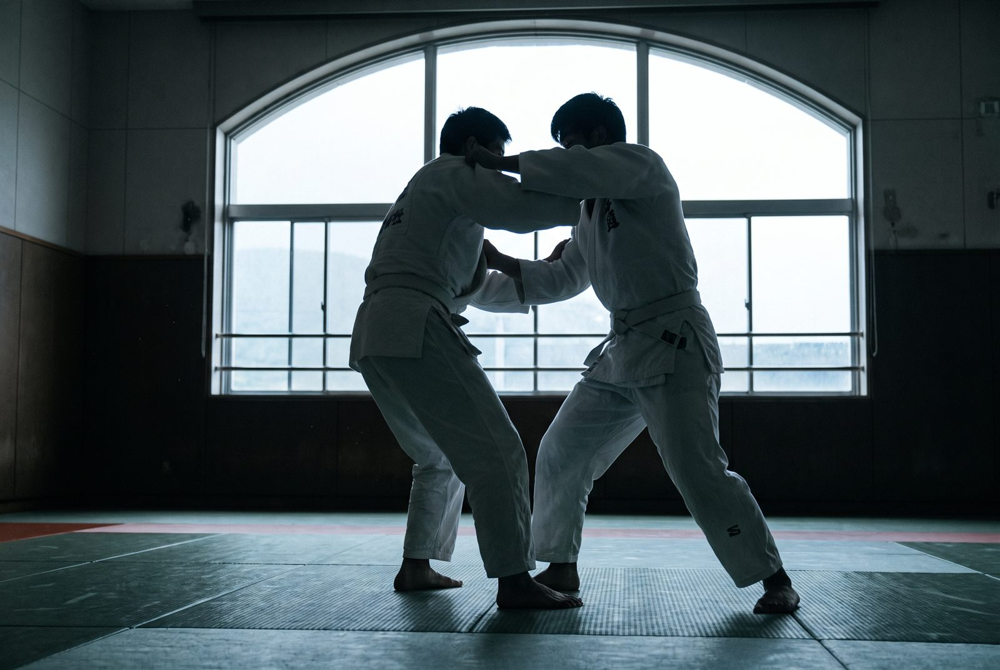

Organisme à but non lucratif · Le Sud-Ouest, Montréal
81 membres, un dojo, une discipline transmise depuis près de 20 ans
Judo pour enfants, hommes et femmes, cours de jour et de soir toute l'année. Affilié à Judo Québec et Judo Canada, dirigé par François Bernaquez.
Notre club
Un club communautaire, pas une franchise
L'École de Judo Bushidokan est un organisme à but non lucratif enregistré depuis 2007, dirigé par le directeur technique François Bernaquez. Le club compte aujourd'hui 81 membres actifs — enfants, hommes et femmes — qui s'entraînent ensemble dans le Sud-Ouest de Montréal.
Nos cours
Un programme pour chaque âge
Judo pour enfants
Discipline, respect et confiance en soi, dans un cadre structuré adapté à chaque groupe d'âge.
Judo pour hommes et femmes
Cours adultes toute l'année, techniques debout et au sol, dans un club mixte et accueillant.
Cours de jour et de soir
Des créneaux toute l'année pour s'adapter aux horaires d'école et de travail.
Le dojo Bushidokan
Affilié aux fédérations officielles du judo canadien
Le club est membre en règle de Judo Québec et de Judo Canada. Sous la direction technique de François Bernaquez, il forme des judokas de tous âges dans le respect des valeurs du judo : courtoisie, courage, sincérité, honneur.

Nous joindre
Le dojo, dans le Sud-Ouest de Montréal
Horaires du dojo
- Lundi — vendredi6h à 21h
- Cours de jour et de soirToute l'année
Coordonnées
- 2390 rue de Ryde, Montréal (Le Sud-Ouest) QC H3K 1R6
- 514-575-0087
- 514-935-9666